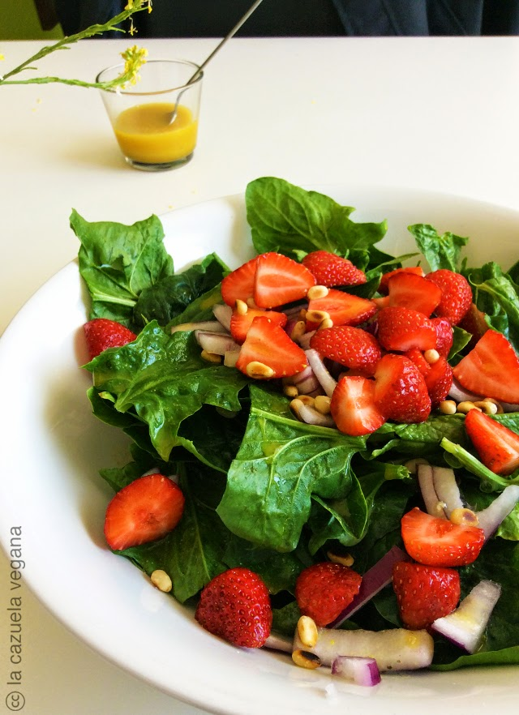

Ensalada de Espinacas y Fresas
Una ensalada fresca y deliciosa con espinacas, fresas y nueces.
- 2 tazas de espinacas frescas
- 1 taza de fresas, en rodajas
- 1/4 taza de nueces
- 1/4 taza de queso de cabra desmenuzado (opcional)
- 2 cucharadas de aceite de oliva
- 1 cucharada de vinagre balsámico
- Sal y pimienta al gusto
Instrucciones:
- En un tazón grande, mezcla las espinacas, las fresas y las nueces.
- En un recipiente pequeño, mezcla el aceite de oliva, el vinagre balsámico, la sal y la pimienta.
- Vierte el aderezo sobre la ensalada y mezcla bien.
- Decora con queso de cabra desmenuzado si lo usas.

Ensalada de Garbanzos y Aguacate
Una ensalada nutritiva con garbanzos, aguacate, tomates y pepino.
- 1 lata de garbanzos, enjuagados y escurridos
- 1 aguacate, picado
- 1 tomate, picado
- 1 pepino, picado
- 1/4 taza de cebolla roja, picada
- 2 cucharadas de jugo de limón
- 2 cucharadas de aceite de oliva
- Sal y pimienta al gusto
- Hojas de cilantro para decorar
Instrucciones:
- En un tazón grande, mezcla los garbanzos, el aguacate, el tomate, el pepino y la cebolla roja.
- En un recipiente pequeño, mezcla el jugo de limón, el aceite de oliva, la sal y la pimienta.
- Vierte el aderezo sobre la ensalada y mezcla bien.
- Decora con hojas de cilantro antes de servir.

Ensalada de Mango y Frijoles Negros
Una ensalada colorida y refrescante con mango, frijoles negros, aguacate y cilantro.
- 1 mango maduro, pelado y cortado en cubos
- 1 lata de frijoles negros, enjuagados y escurridos
- 1 pimiento rojo, picado
- 1/4 taza de cebolla roja, picada
- 1 aguacate, picado
- 1/4 taza de cilantro fresco, picado
- 2 cucharadas de jugo de lima
- 2 cucharadas de aceite de oliva
- Sal y pimienta al gusto
Instrucciones:
- En un tazón grande, mezcla el mango, los frijoles negros, el pimiento rojo, la cebolla roja, el aguacate y el cilantro.
- En un recipiente pequeño, mezcla el jugo de lima, el aceite de oliva, la sal y la pimienta.
- Vierte el aderezo sobre la ensalada y mezcla bien.
- Refrigera durante al menos 15 minutos antes de servir para que los sabores se mezclen.